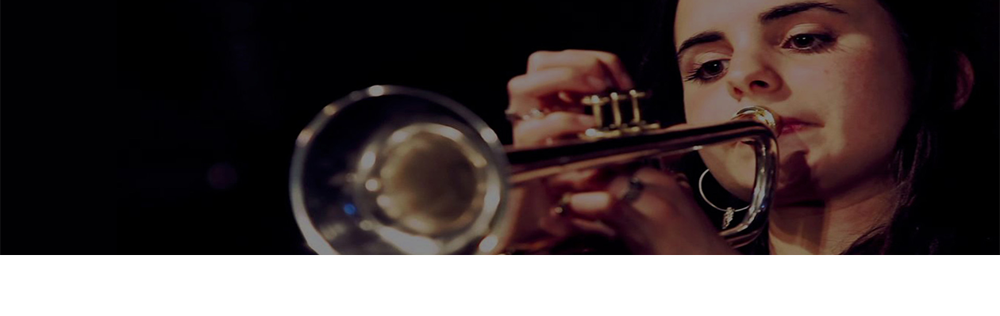

Andrea Motis #포스터#


Video
Andrea Motis는 7살 때부터 Sant Andreu 시립 음악 학교 (바르셀로나)에서 음악적으로 성장하였고,
2007년 12 세에 교육자이자 음악가인 Joan Chamorro 가 이끄는 Sant Andreu Jazz Band 에서 연주를 시작
2023년 현재까지 많은 활약을 보여주고 있다.
2007년 12 세에 교육자이자 음악가인 Joan Chamorro 가 이끄는 Sant Andreu Jazz Band 에서 연주를 시작
2023년 현재까지 많은 활약을 보여주고 있다.